AboutChi sono
I am 16 and a student at Liceo Scientifico Galileo Ferraris in Turin. At Space Eagle APS, the student rocketry team, I am project manager of the CubeSat projects, IceRoute and CubeSAR, and chief engineer of CubeSAR. I co-founded YET and EdUnity, and built the Seeker programme: rockets designed in simulation, instrumented, flown and recovered.
Ho 16 anni e studio al Liceo Scientifico Galileo Ferraris di Torino. In Space Eagle APS, il team studentesco di missilistica, sono project manager dei progetti CubeSat, IceRoute e CubeSAR, e chief engineer di CubeSAR. Ho cofondato YET ed EdUnity, e ho costruito il programma Seeker: razzi progettati in simulazione, strumentati, lanciati e recuperati.
I am also a content creator on TikTok: almost 10k followers, and more than 10 million views across my accounts.
Sono anche content creator su TikTok: quasi 10k follower e più di 10 milioni di visualizzazioni complessive sui miei account.
I usually start from a real physical problem and try to end up with something that runs.
Di solito parto da un problema fisico vero e cerco di arrivare a qualcosa che gira.
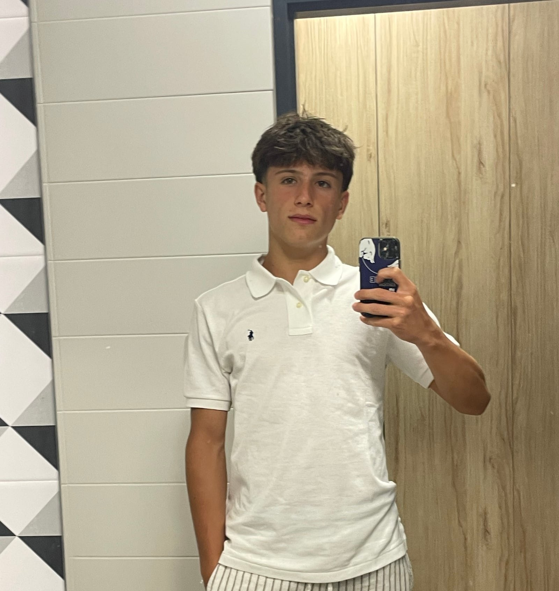
ProjectsProgetti
-
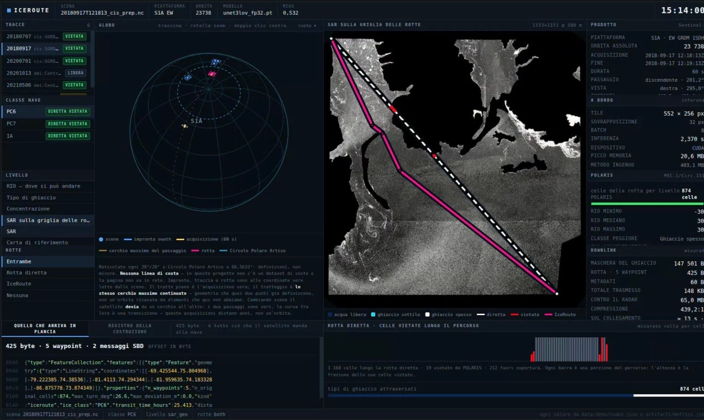
IceRoute
Sea ice segmentation onboard the satellite, and the Arctic route computed in orbit.
Segmentazione del ghiaccio marino a bordo del satellite, e la rotta artica calcolata in orbita.
1st1ºEO Makerspace Hackathon 2026, ESA Φ-lab
Open the projectApri il progetto -
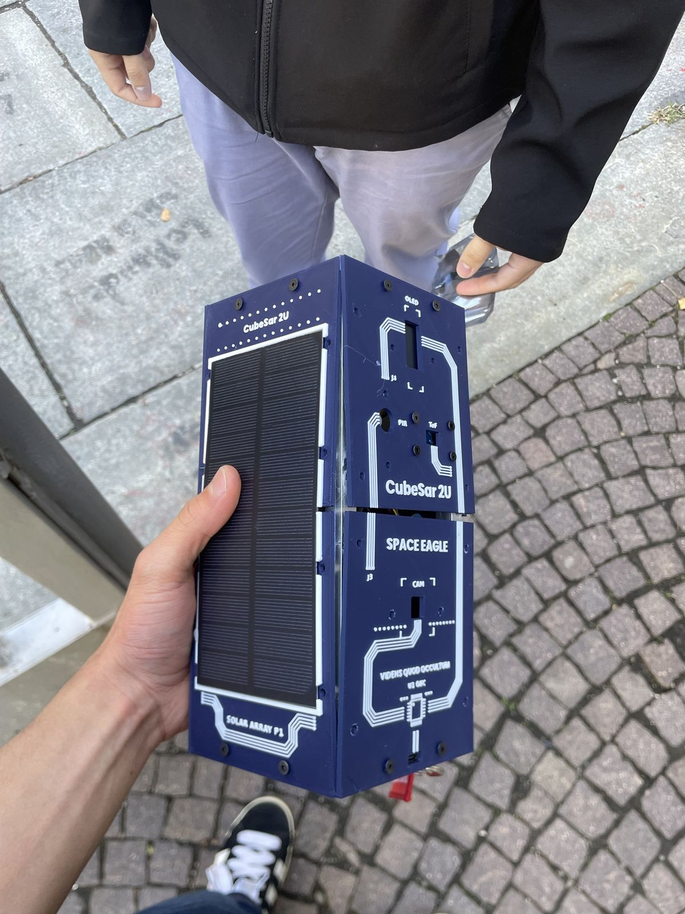
CubeSAR
A desk-sized CubeSat that makes radar images of what is around it, with the same principle as Sentinel-1.
Un CubeSat da tavolo che fa immagini radar di quello che ha intorno, con lo stesso principio di Sentinel-1.
Open the projectApri il progetto -

YET
A club for 16 to 23-year-olds who are building something. No selection, no fee, 150 members from Turin to Rome.
Il club per ragazzi fra i 16 e i 23 anni che stanno costruendo qualcosa. Niente selezione, niente quota, 150 membri da Torino a Roma.
Open the projectApri il progetto -
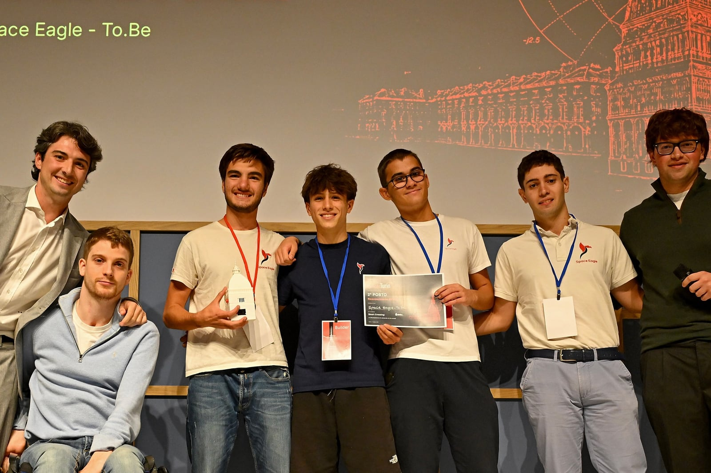
To.Be
A sensor on a city bus that spots potholes, litter and full bins. Four of us built it in a weekend.
Un sensore su un bus di linea che riconosce buche, rifiuti e cassonetti pieni. L'abbiamo costruito in quattro in un fine settimana.
2nd2ºhackTurin 2026, Smart Crossing challengehackTurin 2026, challenge Smart Crossing
Open the projectApri il progetto -
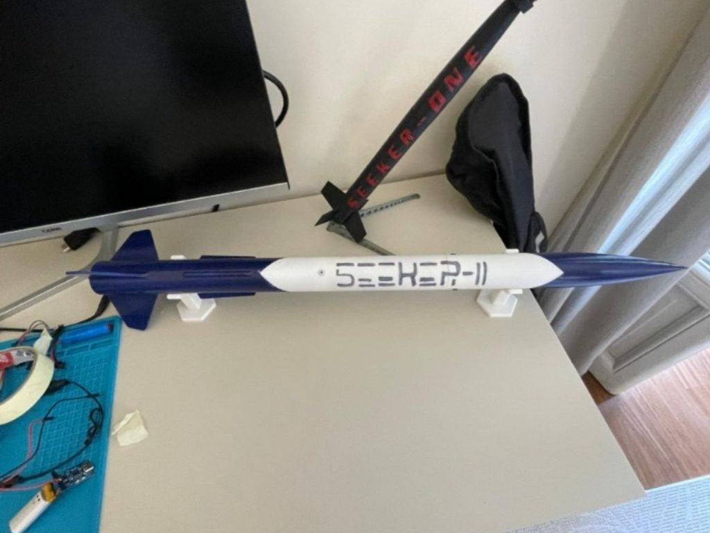
Seeker programmeProgramma Seeker
Model rockets designed end to end, from the simulation to the recovery. Seeker-II carries a flight computer I designed.
Razzi modellistici progettati dall'inizio alla fine, dalla simulazione al recupero. Seeker-II porta un computer di volo progettato da me.
Open the projectApri il progetto -
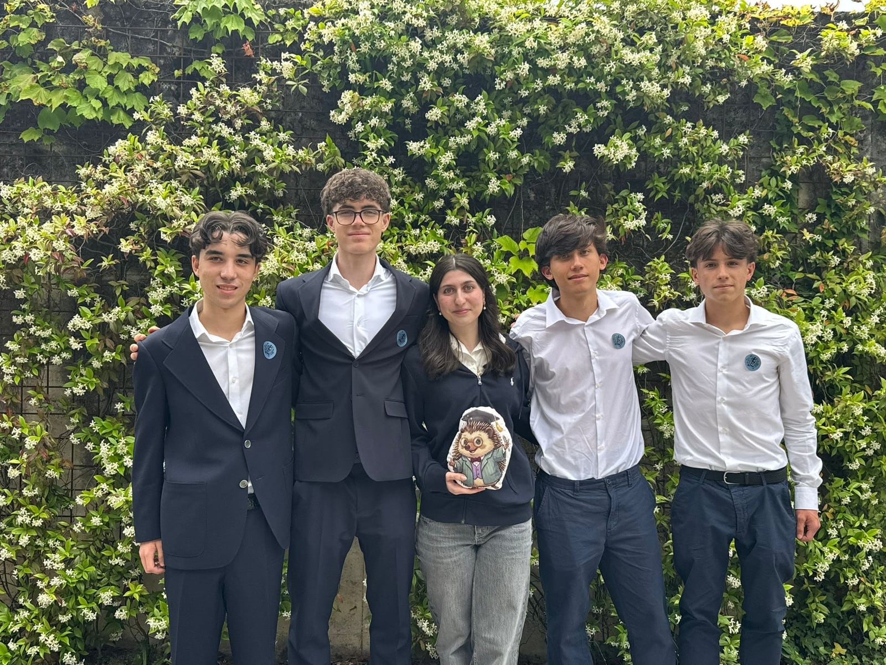
EdUnity
A free platform for studying with AI, designed especially for students with learning disabilities and student athletes.
Una piattaforma gratuita per studiare con l'AI, pensata in particolare per studenti con DSA e studenti-atleti.
2nd2ºFin4Teen 2026, SellaLab
Open the projectApri il progetto -
f4kit
Italian Formula 4 qualifying, read straight out of the official timing PDFs, to the millisecond.
Le qualifiche della Formula 4 italiana, lette direttamente dai PDF cronometrici ufficiali, al millesimo.
Open the projectApri il progetto
Also on GitHubAltro su GitHub
- waterrocketsim A web simulator for water rockets: design the rocket and simulate the launch. Simulatore web di razzi ad acqua: progetti il razzo e simuli il lancio.
- afterword Chat with someone from your message history, in their voice. Style and memory, no fine-tuning. Parlare con qualcuno a partire dalla cronologia dei messaggi, con la sua voce. Stile e memoria, senza fine-tuning.
- unsited Find local businesses with no website, on the map. Fully client-side, built on Google Maps. Trova sulla mappa le attività locali senza sito. Tutto lato client, costruito su Google Maps.
TimelinePercorso
Almost everything on this page I did at 16, alongside school.
Quasi tutto quello che c'è in questa pagina l'ho fatto a 16 anni, insieme alla scuola.
-
Feb 2026 – nowfeb 2026 – oggifrom age 16dai 16 anni
Space Eagle APS
CubeSat project manager, CubeSAR chief engineer · Turin
Project manager CubeSat, chief engineer di CubeSAR · Torino
A student rocketry team. I am project manager of its two CubeSat projects, CubeSAR and IceRoute, and chief engineer of CubeSAR.
Un team studentesco di missilistica. Sono project manager dei suoi due progetti CubeSat, CubeSAR e IceRoute, e chief engineer di CubeSAR.
Read the storyLeggi la storia
The team builds everything in house, from propulsion to avionics. I joined as an associate member in February 2026 and have worked on ICARO and IceRoute since then. Since August 2026 I have been planning and splitting the work on the two radar projects, and checking that what we present outside matches the technical side.
Il team sviluppa tutto in casa, dalla propulsione all'avionica. Sono entrato come socio a febbraio 2026 e da allora lavoro su ICARO e IceRoute. Da agosto 2026 pianifico e divido il lavoro sui due progetti radar, e controllo che quello che presentiamo all'esterno corrisponda alla parte tecnica.
-
Jul 2026 – nowlug 2026 – oggifrom age 16dai 16 anni
YET · Young Entrepreneurs Together
Co-founder · Turin
Cofondatore · Torino
A club for young people who are building something. 150 members, from Turin to Rome.
Un club per ragazzi che stanno costruendo qualcosa. 150 membri, da Torino a Roma.
Read the storyLeggi la storia
- I run the meetings where members present their projects and get direct criticism
- I keep in touch with local founders, mentors and startups
- I look after the website, the tools and the online channels
- Conduco gli incontri in cui i membri presentano i loro progetti e ricevono critiche dirette
- Tengo i contatti con founder, mentor e startup del territorio
- Curo il sito, gli strumenti e i canali online
-
Oct 2026ott 2026age 1616 anni
hackTurin 2026
Space Eagle / To.Be team · Turin
Team Space Eagle / To.Be · Torino
A sensor on a city bus that spots potholes, litter and full bins. Four of us built it in a weekend.
Un sensore su un bus di linea che riconosce buche, rifiuti e cassonetti pieni. L'abbiamo costruito in quattro in un fine settimana.
Smart Crossing challenge by GOMA Elettronica, €1,000
Challenge Smart Crossing di GOMA Elettronica, 1.000 €
2nd2º
-
20262026age 1616 anni
Seeker-II
Model rocket · Seeker programme
Razzo modellistico · programma Seeker
It carries a flight computer I designed: ESP32-C3, altimeter, IMU and LoRa telemetry at 433 MHz.
Porta un computer di volo progettato da me: ESP32-C3, altimetro, IMU e telemetria LoRa a 433 MHz.
-
Feb – Jun 2026feb – giu 2026age 1616 anni
EdUnity
Co-founder, with four schoolmates
Cofondatore, con quattro compagni di scuola
A free platform for studying with AI, designed especially for students with learning disabilities and student athletes.
Una piattaforma gratuita per studiare con l'AI, pensata in particolare per studenti con DSA e studenti-atleti.
Fin4Teen 2026, SellaLab's startup programme, national ranking
Fin4Teen 2026, il programma per startup di SellaLab, classifica nazionale
2nd2º
-
Dec 2025 – Jun 2026dic 2025 – giu 2026age 1616 anni
EO Makerspace Hackathon 2026
ESA Φ-lab Challenges · Frascati
With IceRoute: sea ice segmentation running onboard the satellite.
Con IceRoute: la segmentazione del ghiaccio marino fatta a bordo del satellite.
Read the storyLeggi la storia
Run in collaboration with WMF (We Make Future) and IngeniArs s.r.l. Team: Simone Avella, Federico Fassio, Giuseppe Mondilla, Lorenzo Razzano. Advisor: Riccardo Apa.
In collaborazione con WMF (We Make Future) e IngeniArs s.r.l. Squadra: Simone Avella, Federico Fassio, Giuseppe Mondilla, Lorenzo Razzano. Advisor: Riccardo Apa.
1st1º
-
20252025age 1515 anni
Seeker-One
Model rocket · Seeker programme
Razzo modellistico · programma Seeker
The first vehicle of the programme, designed in OpenRocket to set the baseline: geometry, stability margin, recovery.
Il primo vettore del programma, progettato in OpenRocket per fissare la base: geometria, margine di stabilità, recupero.
-
20242024age 1414 anni
First rocketPrimo razzo
Model rocket · before Seeker
Razzo modellistico · prima di Seeker
The first rocket I built, at my desk, a year before Seeker-One.
Il primo razzo che ho costruito, sulla mia scrivania, un anno prima di Seeker-One.
-
2023 – now2023 – oggifrom age 13dai 13 anni
Liceo Scientifico Galileo Ferraris
Student · Turin
Studente · Torino
-
AlongsideIn parallelo
TikTok
Content creator · @imdoublef
Almost 10k followers, and more than 10 million views across my accounts.
Quasi 10k follower e più di 10 milioni di visualizzazioni complessive sui miei account.
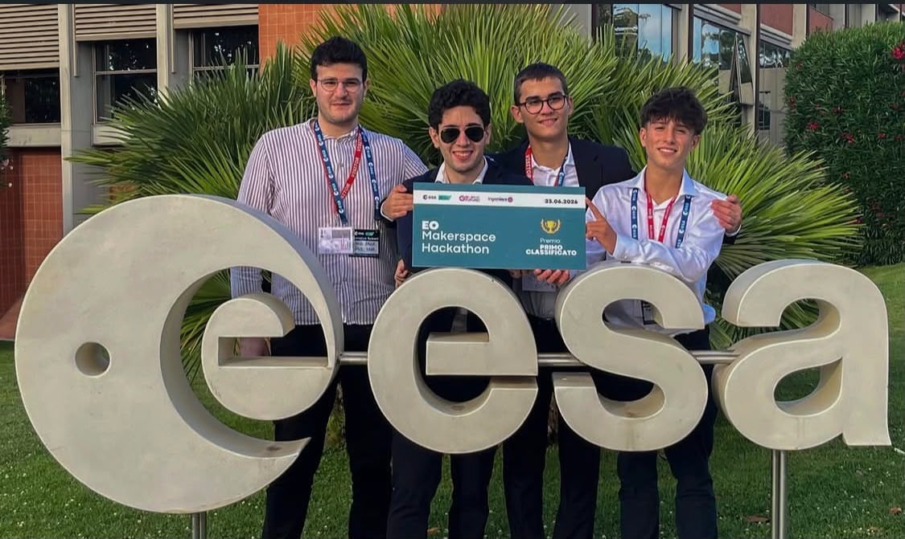
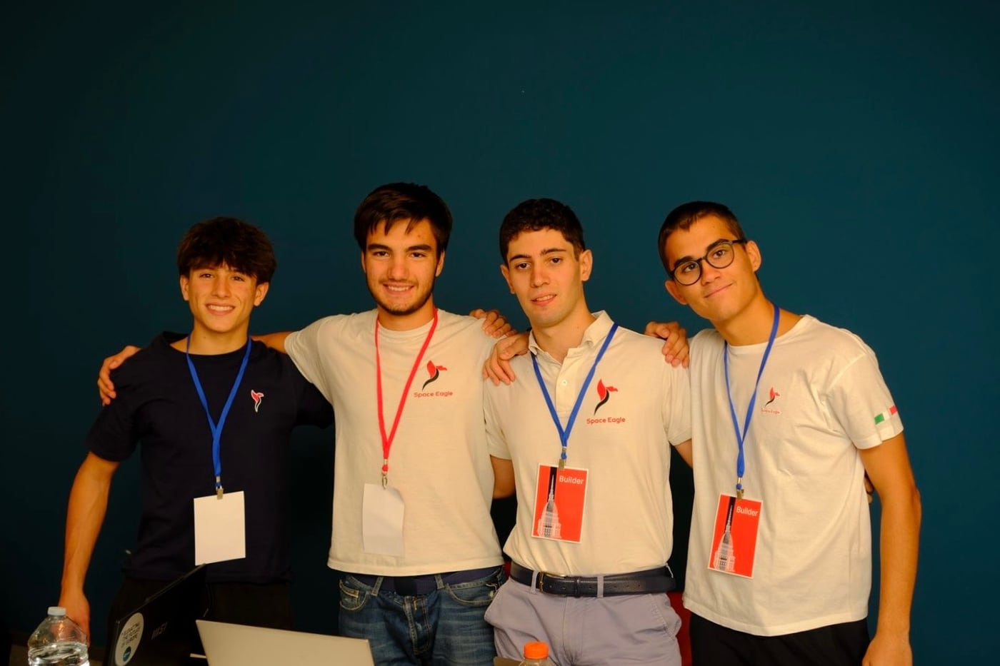
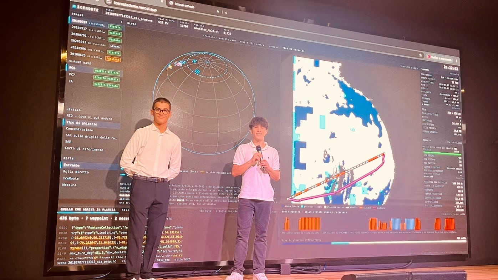
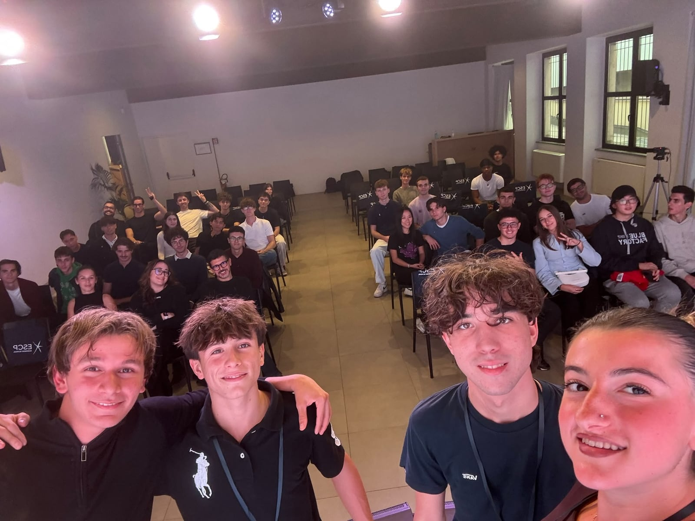
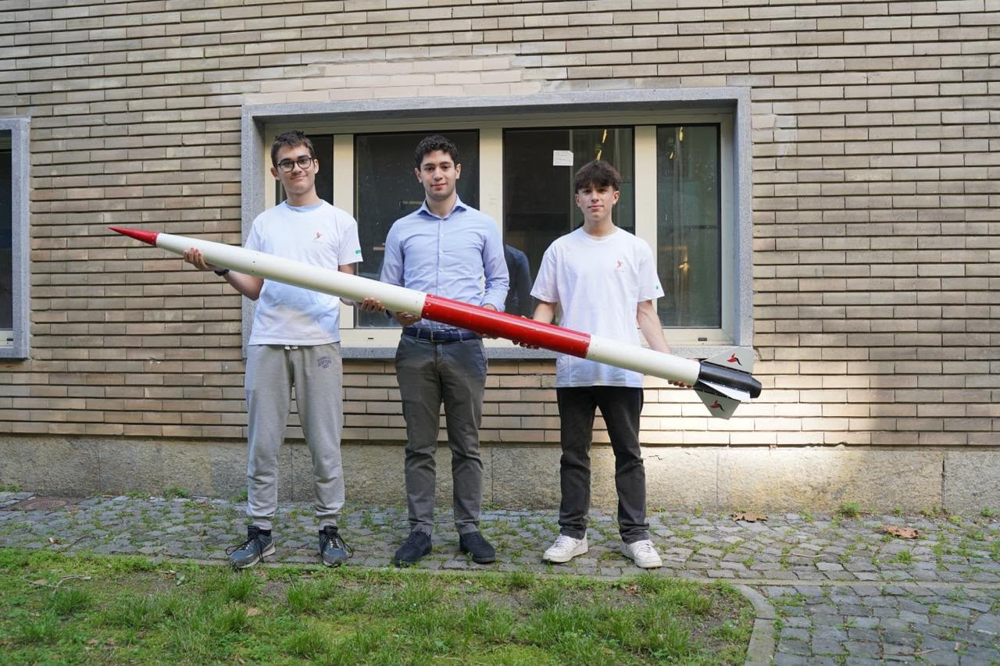
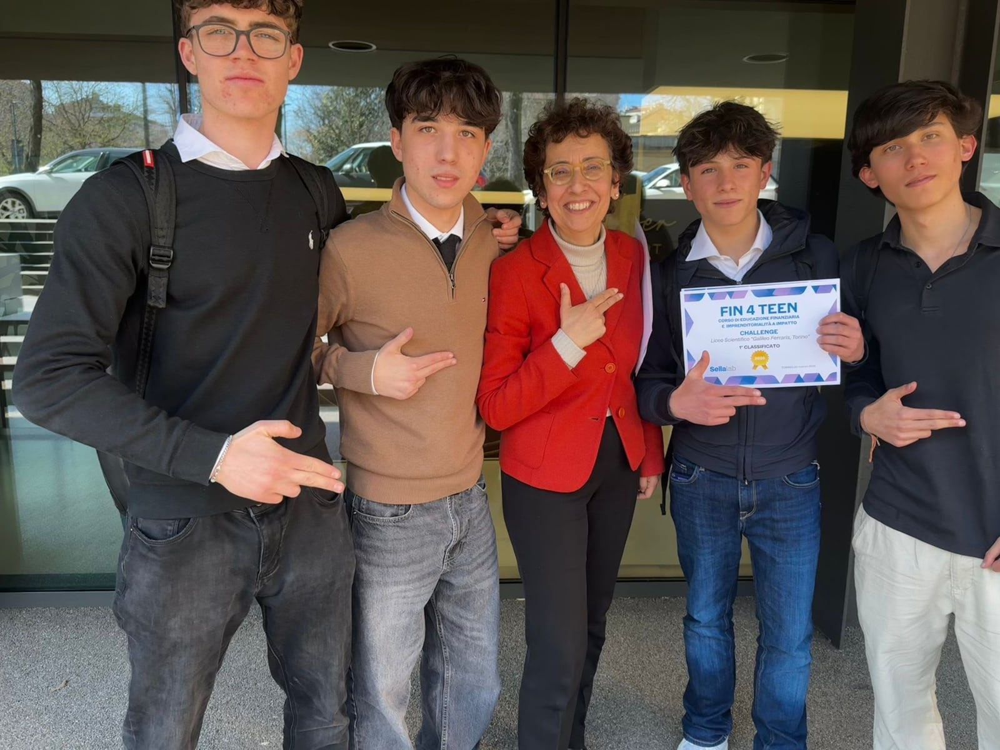
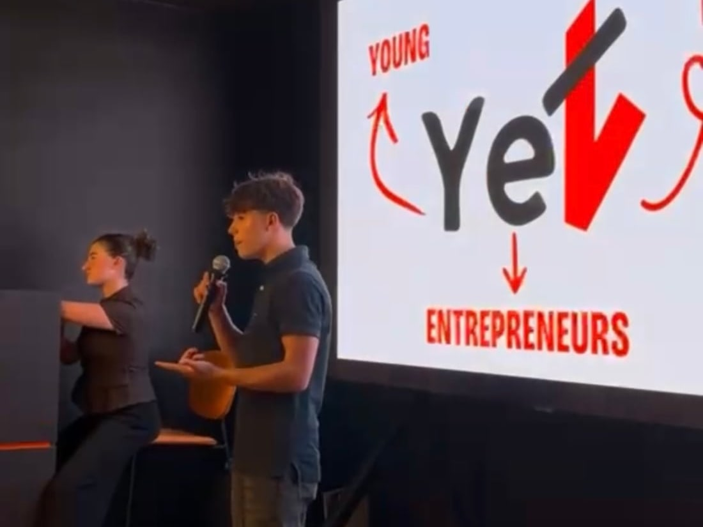
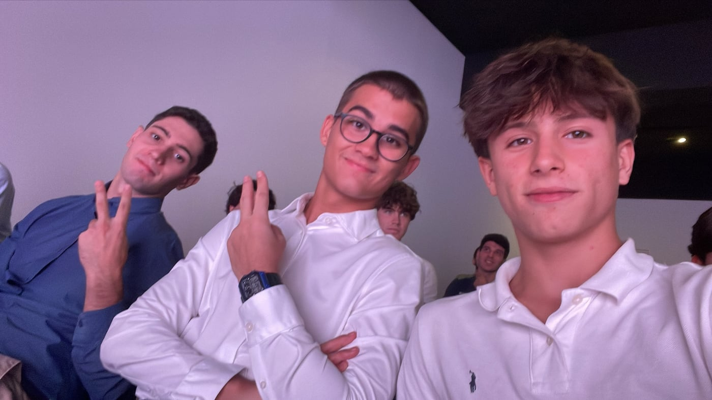
Stack
- LanguagesLinguaggiPython, C++, JavaScript, Bash
- ML and dataML e datiPyTorch, ONNX Runtime, NumPy, pandas, scikit-learn, Streamlit
- WebReact, Vite, HTML, CSS, Firebase, Cloudflare
- Hardware and simulationHardware e simulazioneESP32, LoRa, Fusion 360, OpenRocket, FPGA, VHDL
- ToolsStrumentiLinux, Git, GitHub Actions, GNU Make
ContactContatti
Write to me if you work on Earth observation, onboard computing or rocketry, or if you are building something in Turin.
Scrivimi se lavori su osservazione della Terra, calcolo di bordo o missilistica, o se stai costruendo qualcosa a Torino.
fedefas.210@gmail.com- Federico Fassio
- GitHub
- @DoubleF35
- @federicofassioo
- TikTok
- @imdoublef
- Space Eagle
- federico.fassio@spaceeagle.it